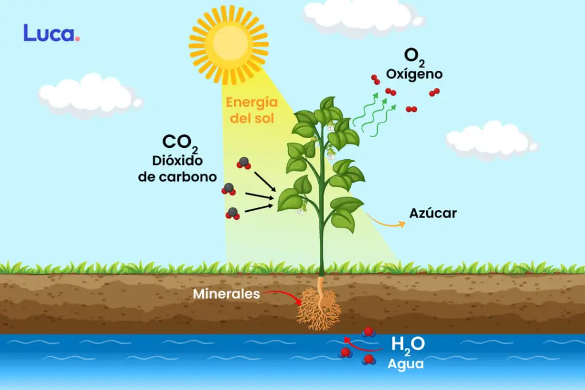

La fotosíntesis o función clorofílica es un proceso químico que consiste en la conversión de materia inorgánica a materia orgánica gracias a la energía que aporta la luz solar. En este proceso, la energía lumínica se transforma en energía química estable, siendo el NADPH (nicotín adenín dinucleótido fosfato) y el ATP (adenosín trifosfato) las primeras moléculas en las que queda almacenada esta energía química. Con posterioridad, el poder reductor del NADPH y el potencial energético del grupo fosfato del ATP se usan para la síntesis de hidratos de carbono a partir de la reducción del dióxido de carbono (CO2). La vida en nuestro planeta se mantiene fundamentalmente gracias a la síntesis que realizan en el medio acuático las algas, las cianobacterias, las bacterias rojas, las bacterias púrpuras, bacterias verdes del azufre,1 y en el medio terrestre las plantas, que tienen la capacidad de sintetizar materia orgánica (imprescindible para la constitución de los seres vivos) partiendo de la luz y la materia inorgánica. De hecho, cada año los organismos fotosintetizadores fijan en forma de materia orgánica en torno a 100 000 millones de toneladas de carbono.
